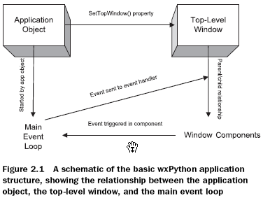
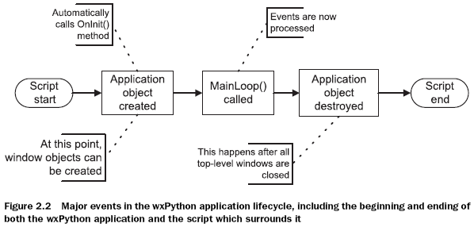
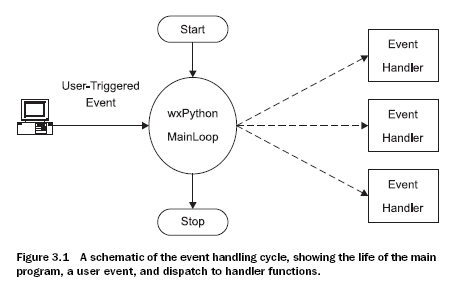
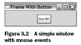
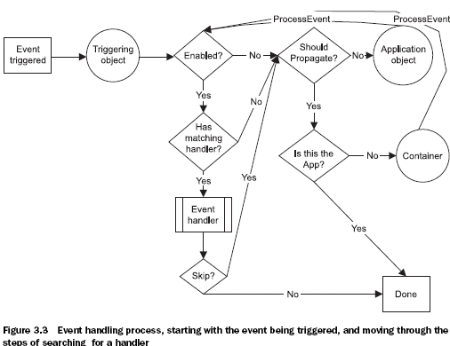
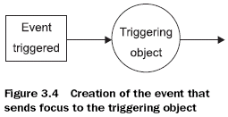
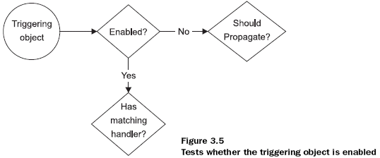
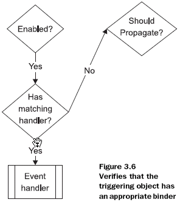
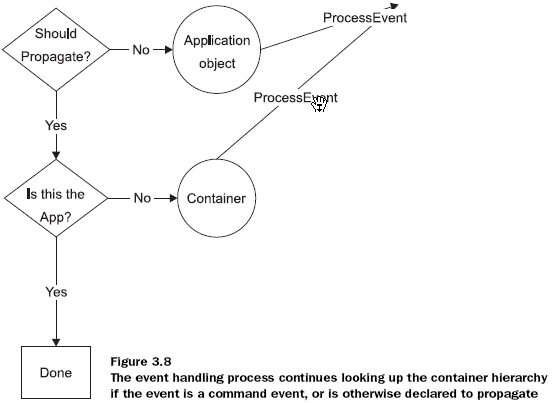
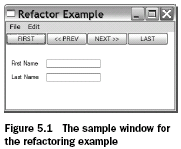

Chap 1 Welcome to wxPython
一个20行的wxPython程序：
#!/bin/env python
import wx
class MyFrame(wx.Frame):
def __init__(self):
wx.Frame.__init__(self,None,-1,"My Frame",size=(300,300))
panel = wx.Panel(self,-1)
panel.Bind(wx.EVT_MOTION,self.OnMove)
wx.StaticText(panel,-1,"Pos",pos=(10,12))
self.posCtrl = wx.TextCtrl(panel,-1,"",pos=(40,10))
def OnMove(self,event):
pos = event.GetPosition()
self.posCtrl.SetValue("%s,%s" % (pos.x,pos.y))
if __name__ == '__main__':
app = wx.PySimpleApp()
frame = MyFrame()
frame.Show(True)
app.MainLoop()
1.1 开始wxPython
运行wxPython需要安装的软件：
| 工具 | 注意点 |
|---|---|
| 操作系统 | 任何Windows 32位系统，Win98以后的版本（如果需要在Win95上运行需要下载一些额外的软件）；Unix或Linux系统兼容GTK；Mac OS X 10.2.3或更高的版本 |
| Python | 任何2.3或以上版本 |
| wxPyhon | 可以从www.wxpython.org |
| 文本编辑器 | Python源码编辑器 |
1.2 构建一个最小的wxPython程序
bare.py的源码：
import wx
class App(wx.App):
def OnInit(self):
frame = wx.Frame(parent=None,title='Bare')
frame.Show()
return True
app = App()
app.MainLoop()
程序运行产生一个空窗口。多数人会把它叫作“window”。在wxPython中称为”frame“。在wxPython中“window”是一个通用的术语，它表示任何可以显示在屏幕上的对象（有些工具包中称为“widget”）。
这个程序说明了编写wxPython程序必需的5个步骤：
-
导入必需的wxPython包
-
创建wxPython application类的子类
-
定义application初始化方法
-
创建一个application类的实例
-
进入application的主事件循环
1.2.1 导入wxPython
导入wxPython包
import wx
导入包后，可以使用wx包前缀引用wxPython类，函数等：
class App(wx.App):
旧风格的导入： 旧的包名为wxPython它包含了一个内置的模块wx。有两种方法从wxPython包中导入wx模块：
from wxPython import wx #DEPRECATED-DON'T DO THIS ANY MORE
或者，可以wx模块中的所有内容。
from wxPython.wx import * #DEPRECATED-DON'T DO THIS ANY MORE
这两种方式都有严重的缺陷。使用第二种方式import 有可能导致命令空间混乱。旧的wx模块通过在所有属性前添加wx前缀避免了这个问题。尽管使用这种安全机制，但是import 仍然可能导致问题，但很多wxPython程序员选择了这种风格，在旧代码中经常能看到这样的代码。这种风格使得类名以小写字母开头（使用wx前缀），而大多数wxPython方法名以大写字母开头。这与Python编程习惯是相反的。
在导入wxPython的其它东西之前时，必须先导入wx。通常，Python中的导入顺序不相关，可以以任何顺序导入。但在wxPython中，尽管它看起来像一个模块，实际上它是一个复杂的模块集合（多数是由Simplified Wrapper and Interface Generator或SWIG自动产生的），它包装了下层的wxWidget C++ toolkit。当第一次导入wx模块时， wxPython执行其它wxPython模块所必须的初始化工作。一些wxPython的子包，比如xrc模块，可能在导入wx模块前不会工作：
import wx # Always import wx before
from wx import wrc # any other wxPython packages,
from wx import html # just to be on the safe side.
这种要求只是针对wxPython模块；对于其它模块仍可以使用原来的方式，那些模块可以在导入wxPython模块之前或之后导入。比如：
import sys
import wx
import os
from wx import xrc
import urllib
1.2.2 applications 和 frames
任何wxPython程序必须有一个application对象和至少一个frame对象。application对象必须是wx.App或其子类的一个实例，子类中需要定义一个OnInit()方法。OnInit()方法将在程序启动时被wx.App父类调用。
wxPython application类
class MyApp(wx.App):
def OnInit(self):
frame = wx.Frame(parent=None, id=-1, title="Bare")
frame.Show();
return True
MyApp是一个常用的名称。OnInit()方法通常是创建frame对象的地方。但不必像这里一样直接创建wx.Frame的实例，而可以使用wx.Frame的子类。wx.Frame的构造器可以接收多个参数，上面提供的3个参数中只有第一个是必须的，其它的有默认值。
调用Show()方法使frame可见。如果不调用则frame将被创建而不可见。可以向Show()方法传递一个Boolean参数切换frame显示或隐藏：
frame.Show(False) # 使frame可见
frame.Show(True) # True是缺省参数值
frame.Hide() # 与frame.Show(False)相等
定义一个应用初始化方法
注意代码中没有在application类中定义__init__()方法。在Python中，这意味着父类方法，wx.App.init()，将在对象创建时被调用。如果自己定义了__init__()方法，不要忘记调用基类的__init__()：
class App(wx.App):
def __init__(self):
# 调用基类的构造器
wx.App.__init__(self)
# 执行其它代码...
如果不这样做，wxPython将不会初始化，并且OnInit()方法也不会被调用。
创建一个application类实例并进入它的主事件循环
最后一步是创建wx.App子类的实例，并调用它的MainLoop()方法：
app = App()
app.MainLoop()
application主事件循环进入后，控制权被传给wxPython。与过程式程序不同，wxPython GUI程序主要实现为事件机制，多数决定于用户的鼠标点击和键盘输入。当应用中所有的frame被关闭后，app.MainLoop()方法将返回，程序将退出。
1.3 扩展最小的wxPython程序
#!/usr/bin/env python
'''Spare.py is a starting point for a wxPython programs. '''
import wx
class Frame(wx.Frame):
pass
class App(wx.App):
def OnInit(self):
self.frame = Frame(parent=None, title='Spare')
self.frame.Show()
self.SetTopWindow(self.frame) # 设置为程序的主 frame
if __name__ == '__main__':
app = App()
app.MainLoop()
- 文件的第一行是一个 shebang 行。它看起来像一个Python注释，在一些操作系统上，比如Linux和Unix，shebang 告诉操作系统如何找到适当的解释器来执行程序文件。如果程序文件有执行权限我们可以在命令行直接运行程序：
% spare.py
shebang行有益于Unix和Mac OS X用户，其它平台将忽略这行。即使你不使用这些系统，仍然可以包含这行以方便跨平台执行。
- 添加了模块的的 docstring 。当模块的第一行是一上字符串时，这个字符串变成模块的docstring 。它被存储在模块的__doc__属性中。可以在代码里，开发环境中，甚至Python解释器中访问到docstring：
>>> import spare
>>> print spare.__doc__
Spare.py is a starting point for a wxPython programs.
>>>
应该尽量在Python支持的地方添加docstring 以便于Python开发工具，比如PyCrust，在编码时提供辅助信息。
-
在bare.py中程序只是创建了wx.Frame的实例。在spare.py中，使用了自定义的wx.Frame的子类。可以在Frame上添加按钮、文本框等。实际上如果Frame类变得复杂时，可以将它放到独立的模块中，然后导入到主程序中。
-
在application类的实例中添加了一个指向frame实例的属性。
-
在OnInit()方法中我们调用了App类的SetTopWindow()方法，并将创建的frame作为参数传递给了它。这个方法可以使frame或dialog作为主窗口。一个wxPython程序可以有多个frame，其中一个作为应用的顶级窗口。
-
最后添加了一些Python方法测试程序是作为程序运行还是作为模块被导入。通过检查模块的__name__属性：
if __name__ == '__main__':
app = App()
app.MainLoop()
如果模块被导入，它的 name 属性值将与模块文件名相同（不含扩展名）：
>>> import spare
>>> spare.__name__
'spare'
>>>
如果模块是被执行，而不是被导入，Python将覆盖默认的__name__属性，将它设置为'main'。我们使用这个机制让模块在被执行进入application实例的主循环。
1.4 创建hello.py程序
#!/usr/bin/env python # Shebang
'''Hello, wxPython! program.''' # docstring
import wx # 导入wx包
class Frame(wx.Frame): # wx.Frame子类
'''Frame class that displays an image.'''
def __init__(self, image, parent=None,id=-1, # 图像参数
pos=wx.DefaultPosition,
title='Hello, wxPython!'):
'''Create a Frame instance and display image.'''
temp = image.ConvertToBitmap() # 显示图像
size = temp.GetWidth(), temp.GetHeight()
wx.Frame.__init__(self, parent, id, title, pos, size)
self.bmp = wx.StaticBitmap(parent=self, bitmap=temp)
class App(wx.App): # wx.App子类
'''Application class.'''
def OnInit(self):
image = wx.Image('./wxPython.jpg', wx.BITMAP_TYPE_JPEG) # 图像处理
self.frame = Frame(image)
self.frame.Show()
self.SetTopWindow(self.frame)
return True
def main(): # main()
app = App()
app.MainLoop()
if __name__ == '__main__': # Import vs. execute
main()
1.5 wxPython可以做什么
1.6 为什么选择wxPython ？
Python与wxWidget 结合
1.7 wxPython如何工作
wxPython是对C++版本的wxWidgets的封装。
wxPython 用了SWIG产生C++ wxWidgets库的封装函数（glue code）。但也有大量的widgets是C++版本中不存在的。
对比wxPython和C++ wxWidget，可以看到wxPython不需要创建starting point。由于Python的动态特性，可以使用 wx.Bind()方法动态绑定事件。C++ 程序中必须使用宏在编译时静态的处理。
Chap 2 Giving your wxPython program a solid foundation
wxPython程序的两个基础对象：application object和top-level window object。
2.1 必需的对象
application对象管理主事件循环，它是整个wxPython程序的心跳。application的主要工作是启动主事件循环。另外application对象有最后处理任何事件的机会。没有application对象，wxPython应用不能运行。
顶层窗口对象通常管理展示给用户的最重要的数据和控件。
这两个对象的关系如图：

这个图显示，application对象“拥有”顶层窗口和主事件循环，顶层窗口管理窗口中的组件和赋给它的数据。窗口和其中的组件在用户动作时触发事件，并在接收到事件通知时改变显示的内容。
2.2 如何创建和使用application对象
第个wxPython程序都需要一个application对象。application对象必须是一个wx.App或其子类的一人实例。application对象的主要目的是在后台管理主事件循环。主事件循环响应窗口系统的事件并分配它们到适当的事件处理器。application对象对于wxPython是如此重要，以至于如果没有application对象，将不能创建任何的wxPython图形对象。
wx.App父类也定义了少量整个应用的全局属性。多数情况下，这就是所有你需要的application对象的功能。在自定义application类中，你可以用它管理全局数据或连接（数据库连接）等。某些情况下你或许需要扩展主事件循环以处理特殊的错误或事件。但是，缺省的事件循环几乎适合于所有你将编写的wxPython程序。
2.2.1 创建wx.App子类
开始一个新应用的时候创建application的子类是一个好的主意，即使你不需要任何自定义的功能，也可以为将来预留扩展。创建wx.App的子类，需要四个步骤：
-
定义子类
-
编写OnInit()方法的定义
-
在程序中创建这个类的实例
-
调用application实例的MainLoop()方法。这个方法将程序控制权传递给wxPython。
OnInit()方法将在wxPython应用启动后，在进入主事件循环开始之前被调用。这个方法不接收参数并返回一个布尔值——如果返回值为False，则应用程序立即退出。多数情况下，将会返回True。退出应该只会出现在错误处理中，比如缺少必要的资源。
由于OnInit()方法的存在，它是wxPython框架的一部分，任何自定义初始化工作通常在这个里处理，而不是在Python的__init__方法中。如果你决定使用__init__方法，则必须调用父类的__init__方法，如下：
wx.App.__init__(self)
通常，你需要在OnInit()方法中至少创建一个frame对象，并调用它的Show()方法。你可以调用SetTopWindow()将这个frame指定为应用程序的顶级窗口。顶级窗口被作为没有父窗口的对话框的缺省父窗口——本质上就是程序的主窗口。
怎样省略wx.App子类
可以不创建wx.App的子类。通常需要在OnInit()方法中创建顶级窗口。但这并不能阻止我们在应用的其它地方创建frame，比如__main__语句。唯一的约束是wx.App实例必须先创建。通常创建wx.App子类是个好的办法，如果系统只有一个frame，这样application的初始化工作没有多少价值。这种情况下，wxPython提供了wx.PySimpleApp类。这个类提供了OnInit()方法的骨架，它的定义如下：
class PySimpleApp(wx.App):
def __init__(self, redirect=False, filename=None,
useBestVisible=False, clearSigInt=True):
wx.App.__init__(self, redirect, filename, useBestVisible,
clearSigInt)
def OnInit(self):
return True
一个使用wx.PySimpleApp例子，如下：
if __name__ == '__main__':
app = wx.PySimpleApp()
frame = MyNewFrame(None)
frame.Show(True)
app.MainLoop()
第一行创建了一个wx.PySimpleApp()的实例。因为使用wx.PySimpleApp类，我们没有OnInit方法，因此我们在第二行定义了frame，由于没有指定parent，因此它是一个顶级frame。第三行显示frame。最后，调用application的主循环。
使用wx.PySimpleApp不需要自定义application类。但应该只在非常简单的应用中使用这种方式。
注意
命名约定
wxPython是从C++ wxWidget派生的，使用了C++的命名约定。Python中，方法名通常使用lower_case_separated_by_underscores或者lowerCaseInterCap风格。但在C++ 中，方法名通常使用UppserCaseInterCap风格。为了保持一致性，推荐在 wxPython 类中使用wxWidgets的风格。
wxPython类也在属性上使用了Get和Set方法。这是C++风格，因为在Python程序通常不定义特殊的访问方法。C++数据成员通常是private的，多数情况下你必须使用访问方法来访问wxPython类成员，而不能访问原始的属性名。
2.2.2 理解application对象的生命周期
wxPython的生命周期开始于application实例创建，结束于最后一个窗口被关闭。并不是需要在Python脚本的开始和结束位置使用这些代码。可以在创建wxPython程序前做一些操作，在application的MainLoop()退出后执行一些清理操作。但所有wxPython的操作必须在application对象的生命周期中操作。这说明主窗口（frame）必须在wx.App对象创建后才能创建。（这也是推荐在OnInit()中创建顶级窗口的原因，这里保证了application对象已经存在了。）
如图所示，创建application对象触发OnInit()方法并允许创建新的窗口。OnInit()执行后，将执行MainLoop()，表示wxPython事件被处理。应用继续执行，事件处理直到窗口被关闭才结束。所有顶层窗口被关闭后，MainLoop()函数返回后application对象被销毁。接下来，脚本可以关闭任何连接或存在的线程。

2.3 如何重定向 wxPython 程序的输出？
所有Python程序可以通过两个标准流输出文本：标准输出流sys.stdout和标准错误流sys.stderr。但是，在创建application对象时你可以控制wxPython将这些标准流重定向到一个窗口中。这个重定向行为在Windows下是默认行为。在Unix系统中，它更像是一个实际的终端窗口，wxPython缺省不控制标准流。在所有系统中，重定向行为可以在创建application对象时显式的指定。推荐使用这个功能的优点，总是指定重定向以避免在不同平台间产生不同的行为。
2.3.1 重定向输出
如果wxPython控制标准流，发送到流中的文本（包括print语句或system trackback）被重定向到单独的wxPython frame。在wxPython应用开始前或之后发送到流中的文本，仍然会像的方式那样处理。下例演示了应用生命周期和stdout/stderr重定向。
#!/usr/bin/env python
# -*- coding: cp936 -*-
import wx
import sys
class Frame(wx.Frame):
def __init__(self, parent, id, title):
print "Frame __init__"
wx.Frame.__init__(self, parent, id, title)
class App(wx.App):
def __init__(self, redirect=True, filename=None):
print "App __init__"
wx.App.__init__(self, redirect, filename)
def OnInit(self):
print "OnInit" # 写到stdout
self.frame = Frame(parent=None, id=-1, title='Startup') # 创建frame
self.frame.Show()
self.SetTopWindow(self.frame)
print >> sys.stderr, "A pretend error message" # 写到stderr
return True
def OnExit(self):
print "OnExit"
if __name__=='__main__':
app = App(redirect=True) # 1.文本重定向从这行开始，这行后，所有文本被重定向到frame中
print "before MainLoop"
app.MainLoop() # 2.进入主循环
print "after MainLoop"
-
这行创建了application对象。从这行后面开始，所有发送到stderr和stdout的文本被wxPython重定向到一个frame中。构造器参数决定了是否进行重定向。
-
当运行时，application创建了一个空的frame，也创建了一个显示用于重定向输出的frame。注意，stdout和stderr的信息都被定向到这个窗口中。在运行这个程序后只能在终端看到下面的输出：
App init after MainLoop 第一行产生于frames被打开之前，第二行产生于它们关闭后。
通过查看终端和用于输出的frame，我们可以获知整个应用的生命周期。
1所示的位置是脚本的启点，从脚本的__main__子句开始运行。接下来在实例上调用wx.App__init__()，控制权转到OnInit()方法，它被wxPython自动调用。从那里，程序转评戏wx.Frame.init()，当wx.Frame实例化后被执行。最后控制转回__main__子句，MainLoop()被调用。主循环结束后，wx.App.OnExit()被wxPython调用，然后执行其余的脚本完成整个过程。
从OnExit()中发出的消息既没有显示在窗口中也没有显示在终端中。实际上在窗口被关闭前执行了显示消息的操作，只是由于速度太快看不到。
快速消失的OnExit()消息对于重定向输出的frame有更大的问题。尽管它在开发阶段是个有用的功能，但你不需要在运行时将带有错误消息流的Frame在用户界面中弹出。而且，如果在执行OnInit()方法时发生了错误，它将把消息发送到重定向frame，但错误将导致应用退出，因为OnInit()将在遇到错误时返回False。结果就会出现文本显示了但消失得很快而看不到。
修改缺省的重定向行为
为了修正上面的行为，wxPython允许在创建应用时设置两个参数。第一个参数，redirect，如果被设置为True输出将被重定向到frame中，如果设置为False，输出仍然输出到终端。如果redirect参数为True，第二个参数，filename，可以被设置。如果设置了，输出被重定向到这个参数所指定的文件名，而不是wxPython frame。因此，修改wx.App创建的代码为：
app = App(False)
将导致下面的输出显示在终端：
app = App(True,"output")
将使输出发送到名为filename的文件中。App __init__和after MainLoop消息将被发送到终端，这是由于这们发生在wx.App对象控制输出流的周期之外。
2.4 如何关闭wxPython应用
当应用中最后一个顶级窗口（top-level）被用户关闭后，wxPython应用退出。top-level，指没有parent，不仅仅指使用了SetTopWindow()方法设置的frame。也包括那些由wxPython自己创建的frame。比如，在上例中应用只有在主frame和重定向输出的frame都被关闭时才会被关闭，即使只用主frame使用了SetTopWindow()，即使在应用中没有显式的创建重定向的frame。编程的方式触发关闭，可以在所有top-level窗口中调用Close()。
2.4.1 管理正常关闭
在关闭的过程中，wxPython删除所有窗口和释放相关资源。有一个勾子可以使你在退出时执行自己的代码。如果在wx.App的子类中定义了OnExit()方法，它将在最后一个窗口被关闭后在wxPython进行清理前执行。你可以使用这个方法清理你创建的非wxPython的资源（比如数据库连接）。即使应用是使用wx.Exit()关闭的，OnExit()方法也将被触发。
如果由于某些原因你希望在最后一个窗口被关闭后继续执行，你可以使用wx.App的方法SetExitOnFrameDelete(flag)改变这个默认行为。如果flag参数被设置为False，程序将继续执行即使最后一个窗口被关闭。这意味着wx.App实例继续存活，事件循环将继续处理事件。你可以创建新的顶级窗口。应用将继续存活直到全局函数wx.Exit()被显式的调用。
wxPython在进入主事件循环前不会触发这个关闭过程。比如，你在OnInit()方法中打开一个对话框，你可以关闭它而不用担心wxPython会将这个操作解释为最后一个顶级窗口被关闭而关闭程序。
2.4.2 管理紧急关闭
某些时候你需要应用立即结束而不关心程序的清理工作。比如系统关闭，你不能执行所有的清理工作。
紧急情况下有两种机制退出wxPython应用。可以调用wx.App的方法ExitMainLoop()。这个方法显式的导致主消息循环中断，导致程序控制权离开MainLoop()函数。这通常将结束应用程序——效果与关闭所有顶级窗口相等。
也可以调用全局方法wx.Exit()。两个方法都不推荐在正常情况下使用，因为它可能导致一些清理函数被跳过。
有时，你的应用由于不可控的外部原因需要关闭。比如当操作系统被关闭或用户登出。这种情况下，你的应用能获得一个机会清理或保存文档或关闭连接。如果应用绑定了一个事件处理器到wx.EVT_QUERY_END_SESSION事件，则那个事件处理器将在应用关闭时被wxPython通知。（第三章将介绍如何绑定事件到事件处理器）事件参数是一个wx.CloseEvent。关闭事件允许应用否决应用的关闭。应用使用事件的方法CanVeto()来否决应用的关闭。如果你不能成功的保存或关闭所有资源，你可能需要这么做。默认的wx.EVT_QUERY_END_SESSION事件处理器调用顶级窗口的Close()方法，这样将依次发送wx.EVT_CLOSE事件到顶级窗口，给了你另一个机会来控制关闭的过程。如果任何Close()方法返回False则应用将试图阻止应用关闭。
2.5 如何创建和使用顶级窗口对象
顶级窗口对象是一个构件（widget）（通常是一个frame）它不被应用中的其它构件所包含。顶级窗口通常是应用程序的主窗口，它包含构件和用于与用户交互的界面对象。前面说过，当所有顶级窗口被关闭时应用程序将退出。
应用至少有一个顶级窗口对象。顶级窗口对象通常是wx.Frame类的子类，尽管它也可以是wx.Dialog的子类。多数情况下你会在应用中自定义wx.Frame的子类。但wxPython中定义了许多典型的wx.Dialog的子类。
通常“顶级窗口（top-level）”指应用中任何（any）没有父容器的构件。你的应用必须有至少一个，但也可以有多个顶级窗口。但这些窗口中，只有一个被显式的使用SetTopWindow()指定为主顶级窗口（main top window）。如果你不使用SetTopWindow指定一个主顶级窗口，则在wx.App的顶级窗口中的第一个frame被作为主顶级窗口。因此显式的指定主顶级窗口并不是必须的，比如，应用中只有一个顶级窗口。重复调用SetTopWindow()将替换当前的顶级窗口——应用中同一时刻只能有一个顶级窗口。
2.5.1 wx.Frame
在wxPython的叫法中，frame通常是被GUI用户称作窗口。也就是说，frame是一个可以由用户在屏幕上移动的容器，它通常包含标题条，菜单条，并能调整大小。wx.Frame是所有frame类的父类。也有一些特殊的wx.Frame的子类。
当创建wx.Frame的子类时，在__init__()方法中应该调用父对象的构造器wx.Frame.init()。例如：
wx.Frame(parent, id=-1, title="", pos=wx.DefaultPosition,
size=wx.DefaultSize, style=wx.DEFAULT_FRAME_STYLE,
name="frame")
构造器包含了多个参数。通常，应该包含一些合理的默认值。在其它构件的构造器中也可以看到这种参数——这与wxPython中的模式类似。
parent | 创建这个frame的父窗体。对于top-level窗口，这个值为None。如果窗口使用了parent参数，则新的frame将属于那个父窗口。在父窗口销毁时被销毁。根据具体的平台，新的frame可能被限制于显示在父窗的上面。在MDI窗口中，新的frame只能在父窗口内部移动和改变大小。 id | 新窗口的wxPython ID号。可以显式的传递一个值，或传入-1以由wxPython自动产生一个新的ID。 title | 窗口标题——多数风格下，它将在窗口的标题条上。 pos | 一个wx.Point对象指定新窗口的左上角在屏幕上的位置。在典型的图形应用中，(0,0)指屏幕的左上解。默认的值为(-1,-1)，这将窗口摆放的位置交给下层的系统自动处理。 size | 一个wx.Size对象指定窗口的大小。默认为(-1,-1)指定由下层的系统自动处理。 style | 一个位常量决定窗口的风格。可以使用位或操作符（|）组合一种或多种效果。 name | 给frame设置的内部名称，用于在Motif中设置资源的值。也可以在后面用于通过名称查找窗口
设置默认值的例子：
class MyFrame(wx.Frame):
def __init__(self):
wx.Frame.__init__(self, None, -1, "My Friendly Window",
(100, 100), (100, 100))
2.5.2 wxPython ID
ID号是wxPython中所有构件都有的。wxPython应用中每个构件都有一个窗口标识。ID号在每个frame中必须是唯一的，但在不同的frame间可以重用ID。我们建议，在整个应用中使用唯一的ID号，以防止在事件处理时发生错误和混乱。在wxPython中有少量预定义的ID号，它们在部分代码中的特定的含义（比如，wx.ID_OK和wx.ID_CANCEL假设为对话框中的OK和Cancel按钮的ID值）。通常在应用中重用标准ID并没有问题。ID值参数通常是传递给wxPython构件构造器的第二个参数，放在父构件参数的后面。在wxPython中使用ID值最重要的作用是创建对象事件和事件响应函数之间的关系。使用重复的ID有可以导致对事件触发错误的响应。
有三种方法创建构件所使用的ID值：
-
的传递一个正整数值给构造器
-
通过wxPython提供的wx.NewId()函数创建ID
-
传递全局常量wx.ID_ANY或-1给构造的构造器
显式地决定ID
最直接的方式，是传递正整数值给构造器作为构件的ID。如果你传递了这个值，则应该确保这个值在同一个frame中的唯一性或者它为一个预定义的常量值。可以使用全局函数ex.RegisterID()来确认wxPython没有在其它地方使用你指定的值。为了防止你的ID与wxPython预定义的ID重复，你使用的ID值应该处于全局变量wx.ID_LOWEST和wx.HIGHEST之间。
使用全局函数NewId()
id = wx.NewId()
frame = wx.Frame.__init__(None, id)
使用常量
传递wx.ID_ANY或-1给构造器，则wxPython将自动生成一个新的ID。然后你可以用GetId()方法获取这个ID。
frame = wx.Frame.__init__(None, -1)
id = frame.GetId()
上面的三种方法并没有明显的区别。
2.5.3 wx.Size和wx.Point
wx.Frame构造器的参数中使用到了wx.Size和wx.Point。这两个类在wxPython程序中使用较频繁。wx.Point类描述点或位置。构造器接收2个参数作为点的x值和y值。如果没有设置参数则缺省为0。使用Set(x,y)设置两个维的值。使用Get()可以获取这两个值，它将把返回值作为包含两个元素的Python元组返回。与多数wxWidgets类不同，wx.Point有访问x和y值的定义。像访问典型的Python属性一样：
x = point.x
y = point.y
另外，wx.Point实例可以作相加，相减，比较操作。比如：
x = wx.Point(2, 3)
y = wx.Point(5, 7)
z = x + y
bigger = x > y
在wx.Point实例中，属性是整数。如果需要浮点坐标，可以使用wx.RealPoint，它与wx.Point类似。
wx.Size类几乎与wx.Point一样，除了实例变量被命名为width和height而不是x和y。他们有同样的属性和操作符定义。
当在wxPython程序中需要wx.Point和wx.Size实例时——比如，传递给另一个对象的构造器——你不需要创建实例。只需要传递Python元组给构造器，wxpython将隐式的创建wx.Point和wx.Size实例：
frame = wx.Frame(None, -1, pos=(10, 10), size=(100, 100))
这不可以用于构造器，也可以用于被封装的C++方法调用。比如：
frame.SetPosition((2, 3))
wx.Frame风格
wx.Frame构造器可接收一个位参数作为style参数。每个wxPython构件对象都有一个类似style的参数，尽管不同类型构件的定义是不同的。这节讨论wx.Frame的风格。其中一些也适用于其它wxPython构件。
所有wxPython构件的风格定义是通过向构造器传递一个位参数来实现的。一些构件也定义了SetStyle()方法，允许你在创建构件后再修改。所有单个的风格元素都对应有预定义的常量（比如wx.MINIMIZE_BOX）。要将多种风格放在一起，可以使用Python位或操作符，|。比如，wx.DEFAULT_FRAME_STYLE的定义是由一些基础风格元素组成的：
wx.MAXIMIZE_BOX | wx.MINIMIZE_BOX | wx.RESIZE_BORDER |
wx.SYSTEM_MENU | wx.CAPTION | wx.CLOSE_BOX
要移除单个风格位时，可以使用异或操作符，^。比如，创建一个基于默认的窗口，但不想它改变大小，可以这么做：
wx.DEFAULT_FRAME_STYLE ^ (wx.RESIZE_BORDER | wx.MINIMIZE_BOX |
wx.MAXIMIZE_BOX)
强烈建议在顶级frame上使用默认风格以便用户可以很容易的识别他们是顶级的窗体。至少，你需要确保顶级的frame可以被关闭。这只需要在风格中包含wx.SYSTEM_MENU。要注意不要使用与操作（&）代替或操作（|）。如果没有风格设置，frame将没有边框，不能移动或关闭。
wx.Frame中常用的风格参数
| 风格 | 描述 |
|---|---|
| wx.CAPTION | 在frame上添加标题条，显示frame的标题属性。 |
| wx.CLOSE_BOX | 指示系统在frame的标题条上显示关闭按钮，并使用系统默认的位置和风格。如果可以的话也将启用系统菜单上的关闭选项。 |
| wx.DEFAULT_FRAME_STYLE | 如果没有指定style则这个值被作为默认值。它的定义是wx.MAXIMIZE_BOX |
| wx.FRAME_SHAPED | 使用这个风格创建的frame可以使用SetShape()方法创建一个非矩形的窗口。 |
| wx.FRAME_TOOL_WINDOW | 通过缩小标题条使用frame看起来像一个toolbox窗口。在Windows中以这种风格创建的窗口不会显示在任务栏的窗口列表中。 |
| wx.MAXMIZE_BOX | 在frame上添加最大化按钮，使用系统参数来决定按钮的位置和外观。如果可以也将启用系统菜单上的最大化按钮。 |
| wx.MINIMIZE_BOX | 在frame上添加最小化按钮，使用系统参数来决定按钮的位置和外观。如果可以也将启用系统菜单上的最小化按钮。 |
| wx.RESIZE_BORDER | 在frame边框上添加调整大小的功能。 |
| wx.SIMPLE_BORDER | 在边框上取消装饰。可能不能工作于所有的平台。 |
| wx.SYSTEM_MENU | 添加系统菜单（关闭，移动，改变大小，等等。使用系统的外观）和关闭按钮。菜单中的改变窗口大小和关闭操作依赖于wx.MAXMIZE_BOX，wx.MINIMIZE_BOX和wx.CLOSE_BOX的设置。 |
2.6 如何添加对象和子窗体到frame上
2.6.1 添加构件到frame上
例：
#!/usr/bin/env python
import wx
class InsertFrame(wx.Frame):
def __init__(self, parent, id):
wx.Frame.__init__(self, parent, id, 'Frame With Button',
size=(300, 100))
panel = wx.Panel(self) # （1）创建面板
button = wx.Button(panel, label="Close", pos=(125, 10), # （2）将按钮添加到面板
size=(50, 50))
self.Bind(wx.EVT_BUTTON, self.OnCloseMe, button) # （3）绑定按钮点击事件
self.Bind(wx.EVT_CLOSE, self.OnCloseWindow) # （4）绑定窗口关闭事件
def OnCloseMe(self, event):
self.Close(True)
def OnCloseWindow(self, event):
self.Destroy()
if __name__ == '__main__':
app = wx.PySimpleApp()
frame = InsertFrame(parent=None, id=-1)
frame.Show()
app.MainLoop()
InsertFrame类的__init__方法创建了两个子窗口（1）和（2）。第一个为wx.Panel，它本质上是一个包含其它窗口的容器它自己只有很少的功能。第二个是wx.Button，它是一个普通的按钮。按钮事件的窗口关闭事件绑定到函数是在（3）和（4）。
多数情况下，你将创建一个单独的wx.Panel实例它的大小和你的wx.Frame的大小是一样的由它来包含所有需要显示在frame中的内容。这样做以保持用户的内容与窗口的其它元素，如工具条、状态条等分离。另外，在Windows操作系统中，wx.Frame的缺省的背景色不是标准的（它是灰色的，不是白色），当然wx.Panel默认是白色背景（假设你没有修改你的系统的主题设置）。wx.Panel类允许使用tab键遍历内部的元素，而wx.Frame不支持。
与其它UI工具包不同，你不需要调用方法将子窗口插入到父窗口中。在wxPython中你只需要在创建子窗口时指定父窗口，这样子窗口就被添加到父窗口内部。
在上面的代码中wx.Button创建时指定了位置和大小，而wx.Panel没有指定。在wxPython中，如果frame中只有一个子窗口，则那个子窗口（这里的wx.Panel）将自动改变大小到填充整个frame的客户区域。这个自动处理的过程将覆盖子窗口中设置的位置和大小信息——即使panel指定了位置和大小信息，它也将被忽略。这种自动改变大小的行为只发生在frame或dialog中只有一个元素的情况下。按钮是panel的子对象，而不是frame，因此它指定的大小和位置被使用。如果按钮的位置和大小没有指定则将使用默认的位置，位于panel的左上角，它的大小取决于标签文本的长度。
显式的指定每个子窗口大小和位置很快就让人觉得泛味。更重要的是，它不允许你的应用在用户调整窗口大小时重新配置对象的位置。为了解决这些问题，wxPython使用sizers对象来管理复杂的子窗口的定位。
2.6.2 添加菜单条、工具条或状态条到frame
通常，一个应用程序窗口将有一到三个特殊的子窗口——顶部的菜单条，工具条和底部的状态条。wxPython提供了特殊的快捷方法来创建工具条和状态条（菜单条不是那么困难）。
下面的代码中的__init__方法在普通窗口上装钸了所有这三种子窗口。
#!/usr/bin/env python
import wx
import images
class ToolbarFrame(wx.Frame):
def __init__(self, parent, id):
wx.Frame.__init__(self, parent, id, 'Toolbars',
size=(300, 200))
panel = wx.Panel(self)
panel.SetBackgroundColour('White')
statusBar = self.CreateStatusBar() # （1）创建状态条
toolbar = self.CreateToolBar() # （2）创建工具条
toolbar.AddSimpleTool(wx.NewId(), images.getNewBitmap(),
"New", "Long help for 'New'") # （3）添加工具条按钮
toolbar.Realize() # （4）准备显式工具条
menuBar = wx.MenuBar() # （5）创建菜单条
menu1 = wx.Menu() # （6）创建两个独立的菜单
menuBar.Append(menu1, "&File")
menu2 = wx.Menu()
menu2.Append(wx.NewId(), "&Copy", "Copy in status bar")
menu2.Append(wx.NewId(), "C&ut", "")
menu2.Append(wx.NewId(), "Paste", "")
menu2.AppendSeparator()
menu2.Append(wx.NewId(), "&Options...", "Display Options") # （7）创建独立的菜单项
menuBar.Append(menu2, "&Edit") # （8）将菜单加到菜单条
self.SetMenuBar(menuBar) # （9）将菜单条加到frame
if __name__ == '__main__':
app = wx.PySimpleApp()
frame = ToolbarFrame(parent=None, id=-1)
frame.Show()
app.MainLoop()
-
（1）创建了状态条，它是类wx.StatusBar的一个实例。作为frame来说，它是一个放置在frame底部的子窗体，它的宽度与frame相同，高度决定于下层的操作系统。状态条的目的是为了显式应用中事件所设置的文本信息。文本的大小和字体也取决于所处的操作系统。
-
（2）创建了一个wx.ToolBar的实例，它是一个自动定位于frame顶部的包含命令按钮的容器。
-
（3）有两个方法可以添加工具到工具条，这行显式带少量参数的一种，AddSimpleTool()。参数是一个ID、位图、作为帮助信息显式的tips、显式在状态条上的较长的提示信息。尽管工具在工具条上看起来像按钮，但对于事件系统，它的行为更像一个菜单项，它使工具表现得与菜单条中的项一样。特别是点击工具按钮触发的wxPython事件类型与菜单项的一样，这意味着它们可以使用同样的方法来响应。
-
（4）Realize()方法告诉工具条计算按钮应该放在什么位置，这是需要的，因为工具条添加工具依赖于动态定位，因为它没有显式指定自己的大小和位置。
-
（5）创建一个wx.Menu对象，它描述一个菜单项。
-
（6）创建独立的菜单项，参数有ID、项上的文本、显示在状态栏上的文本。“&”指定菜单项的快捷键。
2.7 使用通用对话框
wxPython库提供了丰富的预定义的对话框，它使你的应用有统一、熟悉的外观。这节我们讨论三种基本的获取用户信息的对话框：
-
消息对话框
-
文本输入
-
列表选择
wxPython中有许多标准的对话框，包括文件选择、颜色选择、进度条对话框、打印设置、字体选择、
发送消息
最常用的与用户通话的方式是使用wx.MessageDialog，它是一个简单的警告框。wx.MessageDialog可以用于简单的OK对话框，或yes/no对话框。下面的片段显式了yes/no的行为：
dlg = wx.MessageDialog(None, 'Is this the coolest thing ever!',
'MessageDialog', wx.YES_NO | wx.ICON_QUESTION)
result = dlg.ShowModal()
dlg.Destroy()
它的构造器结构如下：
wx.MessageDialog(parent, message,
caption="Message box",
style=wx.OK | wx.CANCEL,
pos=wx.DefaultPosition)
parent是父窗口，或None如果对话框为顶级对话框。message是显示在对话框中的，catption是显示在标题栏中的字符串。style参数是决定显示在对话框中的按钮和图标的bitmask，pos参数可以接收wx.Point类型或Python元组，允许你指定对话框显示在屏幕上的位置，如果你需要的话。
ShowModal()方法将对话框显示为模态frame，这表示应用中的其它窗口在用户关闭这个对话框后才能响应用户事件。这个方法通常用于所有对话框。ShowModal()的返回值是一个整数，表示对话框的结果。在这里，结果取决于用户按的按钮。对于wx.MessageDialog，它将返回下面的常量：wx.ID_YES，wx.ID_NO，wx.ID_CANCEL，或wx.ID_OK。
控制风格的bit位可以组合来控制按钮的显示，规定的值为wx.OK，wx.CANCEL，wx.YES_NO。风格位可以用于设置显示于窗口中的图标，它可以是这些值中的一种：wx.ICON_ERROR，wx.ICON_EXCEPTION，wx.ICON_INFORMATION，wx.ICON_QUESTION。
输入单行文本
如果你需要从用户获取单行文本，你可以使用wx.TextEntryDialog类。下面的片段创建了这种对话框，如果用户点击OK按钮退出则获取输入框中的值：
dlg = wx.TextEntryDialog(None, "Who is buried in Grant's tomb?",
'A Question', 'Cary Grant')
if dlg.ShowModal() == wx.ID_OK:
response = dlg.GetValue()
wx.TextEntryDialog构造器的参数依次是，父窗口，显示于窗口中的文本，显示于窗口标题栏上的文本（默认为“Please enter text”），输入框的默认值（默认为空字符串）。也有一个style参数它默认被设置为wx.OK | wx.CANCEL。你可以只向style属性传递wx.OK来创建一个没有cancel按钮的对话框。与wx.MessageDialog类似，ShowModal()方法返回被按下的按钮的ID。GetValue()方法包含用户输入到文本框的值（对应的方法为SetValue()，它允许你修改输入框的值）。
列表选择框
列表选择对话框使用wx.SingleChoiceDialog类。举例如下：
dlg = wx.SingleChoiceDialog(None,
'What version of Python are you using?',
'Single Choice',
['1.5.2', '2.0', '2.1.3', '2.2', '2.3.1'])
if dlg.ShowModal() == wx.ID_OK:
response = dlg.GetStringSelection()
参数与文本输入对话框类似，除了传递的字符串文本，在这里传递的是一个列表中的字符串列表。有两种方式区取选择的返回值。GetSelection()返回用户选中的元素的编号，而GetStringSelection()返回选中的实际字符串。
2.8 应用程序对象和frame的常见错误
在创建wxPython application对象或初始化顶级窗体时有少量错误在发生时可能难于跟踪，特别是当第一次遇到这些错误时。下面的错误列表列出了出错时错误信息没有完全描述清楚实际问题的情况，或者错误验证于分析的情况。这些对于wxPython初学者都是常见的错误：
常见问题：
- 错误消息：“unable to import module wx.”
原因——wxPython模块不在PYTHONPATH中。这表示wx.Python可能没有正确安装。如果系统中安装了多个Python系统，wxpython可能不是被安装到当前使用的那个Python环境中。
解决办法——检查你使用的Python版本。在Unix系统中，which python命令可以告诉你默认的Python。在Windows系统中，可以通过查看.py文件关联的解释器。如果wxPython没有正确安装，需要装它放到
- 应用在启动时立即崩溃或显示一个空窗口后崩溃。
原因——一个wxPython对象先于wx.App之前创建。
解决办法——在启动时立即创建wx.App。
- 顶级窗口在创建后立即被关闭。应用立即退出。
原因——没有调用wx.App.MainLoop()。
解决办法——在所有设置完成后调用MainLoop()方法。
- 顶级窗口在创建后立即被关闭。应用立即退出，并且调用了MainLoop()方法。
原因——在应用的OnInit()方法中发生了错误，或者其中调用的方法发生了错误（比如frame的__init__()方法）。
解决办法——在调用MainLoop()之前发生的错误将触发异常并退出程序。如果应用设置了重定向stdout和stderr到窗口，则这个窗口将不能停留足够长的时间显示错误信息。创建应用（application）对象时设置redirect=False以便看到错误信息。
2.9 总结
-
wxPython程序的基础是基于两个对象：一个应用程序对象和顶级窗口。每个wxPython应用需要实例化一个wx.App对象，至少要有一个顶级窗口。
-
应用程序对象包含wx.App.OnInit()方法，它在启动时被调用。这个方法是初始化frame和其它全局对象的首选位置。wxPython应用程序在所有顶级窗口被关闭，或主事件循环被退出时被正常关闭。
-
应用程序对象也控制wxPython的文本输出的重定向。默认情况下，wxPython将stdout和stderr重定向到一个特殊的窗口。这个行为可能导致启动故障检测困难。可以改变这种行为将错误信息发送到文件或终端窗口。
-
wx.Python应用程序通常至少使用一个wx.Frame的子类。一个wx.Frame对象在创建时可以使用多种style参数。每个wxWidget对象，包括frame，都有一个ID,它可以由应用显式的赋值或由wxPython自动生成。子窗体通过通过指定parent参数插入父窗体中。通常一个frame包含一个wx.Panel其它子窗体放在panel上。frame的单个子窗体将随父窗体缩放而缩放。frame有显式的管理机制管理菜单条、工具条和状态条。
-
尽管使用frame可以适用于任何复杂的需求，当你需要简单快捷的从用户获取信息时，你可以给用户显示标准对话框。这些标准对话框可以完成许多任务，包括：警告框、简单的文本录入或列表选择框。
Chap 3 事件驱动环境
事件处理机制是让wxPython工作的基础。一个主要通过事件处理来工作的程序被称作事件驱动。
事件指系统中发生的一些事情，你的应用可以响应来触发一些功能。事件可以是低级用户动作，比如鼠标移动或按键按下，或由wxPython指定的高级用户事件，因为它在wxPython构件内部被替换了，比如按钮的click或菜单选择事件。事件也可以由下层的操作系统创建，比如请求关机。你甚至可以创建自己的对象来产生你自己的事件。wxPython应用程序通过关联响应代码段与指定类型的事件类型来工作。事件映射到代码的处理被称作事件处理。
3.1了解事件之前
| 术语 | 定义 |
|---|---|
| 事件（event） | 应用中发生的需要响应的事情 |
| 事件对象（event object） | wxPython中事件的具体描述包括针对具体事件的数据属性。事件被描述为wx.Event类和其子类的实例，比如wx.CommandEvent和wx.MouseEvent。 |
| 事件类型（event type） | 一个整数ID，wxPython将添加到每个事件对象。事件类型给出了事件更详细的信息。比如，wx.MouseEvent的事件类型指明了事件是鼠标点击还是鼠标移动。 |
| 事件源（event source） | 任何创建事件的wxPython对象。比如按钮，菜单项，列表框或其它构件。 |
| 事件驱动（event-driven） | 一种程序结构花大量时间等侍或响应事件。 |
| 事件队列（event queue） | 连续的事件列表包含已经发生但没有被处理的。 |
| 事件处理器（event handler） | 用于响应事件的函数或方法。也称为事件处理函数或事件处理方法。 |
| 事件绑定器（event binder） | 一个wxPython对象，维护构件与特定事件类型的关系。为了能被调用，所有事件处理器必须注册到一个事件绑定器。 |
| wx.EvtHandler | 一个wxPython类，它的实例能创建针对特定类型事件的事件绑定器，事件源，和与事件处理器之间的绑定关系。wx.Evthandler与事件处理函数或先前的方法定义 |
3.2 什么是事件驱动编程
事件驱动程序的主要控制结构就是接收事件和响应它们。wxPython程序的结构（或者任何事件驱动程序）与典型的Python脚本是根本不同的。典型的Python脚本有特定的起点的终点，程序员使用条件、循环和函数控制执行顺序。程序不是线性的，但它的顺序通常是不依赖于用户的动作。
从用户的角度看，一个wxPython程序花大量时间什么也不做。通常，它处理空闲状态直到用户或系统做了什么触发wxPython程序进入动作。wxPython程序结构是一个事件驱动程序架构的例子。

表3.1显示了事件驱动程程序的主要部分。
把事件驱动系统中的主事件循环想像成类似一个客户服务中心的操作员。当没有电话时这个操作员处于侍命状态。终于，有一个事件发生了，比如电话铃响了。这个操作员启动响应处理，包括与客户谈话直到操作员有足够信息来将客户分配到它请求的人。操作然等侍下个事件。
尽管每个事件驱动系统都有些不同，但他们也有相似的地方。事件驱动程序结构的主要特征如下：
-
初始化后，程序花多数的时间在等侍循环中，在这里它执行很少的或不执行处理。进入这个循环表示程序用户交互部分的开始，离开循环表示结束。在wxPython中，这个循环是方法wx.App.MainLoop()，它在你的脚本中被显示的调用。当所有顶级窗口被关闭时主循环自动退出。
-
程序包含事件对应于程序环境中发生的事件。事件通常由用户触发，但也可以由系统触发，或程序中其它地方的任意代码。在wxPython中，所有事件都是wx.Event类或它的子类的实例。每个事件都有一个事件类型属性它标识出不同事件的特点。比如，鼠标向上和向下移动都是作为相同类型的实例来分派的，但它们具有不同的事件类型。
-
作为等侍循环的一部分，程序定期检查是否有需要响应的事件发生。事件驱动系统有两种机制可以得到事件的通知。比较流行的方法，也是wxPython中使用的方法是将事件发送到中央队列，在那里触发对事件的处理。另一种事件驱动系统是使用轮询方法，那些可以发生事件的地方被中央处理进程周期性的查询，检查是否有事件未处理。
-
当事件发生时，基于事件的系统处理尝试决定哪段代码需要被执行。在wxPython中，本地系统事件（native system event）被翻译为wx.Event实例，然后被传递给wx.EvtHandler.ProcessEvent()来分派给合适的处理器代码。图表3.3描述了处理的概况。事件机制的一部分组件是事件绑定对象和事件处理器，两者的定义在表3.1中。事件绑定器是一个预先定义的wxPython对象。每种事件类型有一个独立的事件绑定器。一个事件处理器是一个函数或方法可以获得一个wxPython事件实例作为参数。事件处理器将在用户触发适当的事件时被调用。
3.2.1 事件处理器编码
在wxPython代码中，事件和事件处理器是在单个构件中管理的。比如，一个按钮的click事件被分配到基于被点击的按钮的处理器。为将事件绑定到绑定到指定构件的指定处理器方法，你需要使用绑定器（binder）对象来管理连接。比如，
self.Bind(wx.EVT_BUTTON, self.OnClick, aButton)
使用预定义的事件绑定器wx.EVT_BUTTON关联到aButton的click事件到self.OnClick方法。Bind()方法是wx.EvtHander的一个方法，它是所有可显示对象的父对象。因此，例子中的这行代码可用于任何可显示的类。
尽管你的wxPython程序看起来像在被动的等侍事件，实际上它仍在做一些事件。比如，它运行wx.App.MainLoop()方法，它是一个while无限循环。MainLoop()可以下面的简单的Python伪码：
while True:
while not self.Pending():
self.ProcessIdle()
self.DoMessage()
换句话说，如果没有消息要处理，执行一些空处理直到有消息进来，然后将消息分配到适当的事件处理方法。
3.2.2 设计事件驱动程序
wxPython事件驱动程序有一些隐式的设计和编码规则。由于不能假设事件何时发生，程序员放弃了许多对程序的控制权给用户。在wxPython程序中多数执行的代码是直接或间接的由用户或系统产生。比如，程序的保存工作通常发生在用户选择菜单项，点击工具条按钮或通过快捷键之后。这些事件触发一个处理器来保存用户的工作。
事件驱动架构的另一种后果是这个架构经常会扩展。用于响应一种事件的代码通常不定义在触发事件的构件中。或者说，绑定的事件和处理器之间不需要有任何联系。比如，用于响应按钮点击的代码不需是按钮定义的一部分，它可以定义在包含按钮的frame中，或其它地方。当与可靠的面向对象设计结合时，这个构架可以带来松耦合，高复用的代码。你将发现Python的灵活使得不同wxPython应用间重用通用事件处理器和结构非常容易。另一方面，由于程序的分解导致事件驱动的程序难于跟踪和维护。当按钮的click事件发生时绑定到frame中的代码，事件调用了模型类中的方法，它可能难于跟踪。
3.2.3 事件触发
在wxPython中，多数构件将高级事件用于响应低级事件。比如，在wx.Button的内部点击鼠标导致产生一个EVT_BUTTON事件，它是wx.CommandEvent的一个特殊类型。类似的，鼠标拖动窗口的一角导致一个wx.SizeEvent被wxPython自动创建。这些高级事件的优点在于它们使系统集中焦点于最相关的事件，而不用跟踪所有鼠标点击。比如，我们说鼠标点击一个按钮的活动，这个特殊的点击对于系统有上下文含义，而另一个鼠标点击事件可能对于上下文没有含义。高级事件也能包含更多关于事件的信息。当你创建自己的自定义构件时，你可以定义你自己的自定义事件来管理这个过程。
事件被wxPython描述为对象。wxPython中的事件对象是类wx.Event或其子类的实例。wx.Event类是一个很小的抽像类由getter、setter方法和少数所有事件都需要的通用属性，比如EventType，EventObject和Timestamp。不同的wx.Event子类添加了更丰富的信息。比如，wx.MouseEvent包含了事件发生时鼠标的精确位置，并包含了是哪个鼠个按钮点击，等。
在wxPython中有许多不同的wx.Event的子类。表3.2包含了常用事件类的列表。记住，一个事件类可以有多个不同的事件类型，每个对应于不同的用户动作。
表3.2 重要的wx.Event的子类
| 事件 | 描述 |
|---|---|
| wx.CloseEvent | 当frame关闭时触发。事件类型用于区分frame被正常关闭或者是系统关机事件。 |
| wx.CommandEvent | 广泛用于简单的与构件交互，比如按钮被点击，菜单项被选择，或radio被选择。每个动作都有自己的事件类型。许多复杂的构件，比如list或grid，定义了wx.CommandEvent的子类。命令事件由不同的事件处理系统不同的对侍，而不是由其它事件。 |
| wx.KeyEvent | 按键事件。事件类型有按键被按下，弹起和完整的按键动作。 |
| wx.MouseEvent | 鼠标事件。事件类型有鼠标移动和鼠标点击。这些事件类型取决于哪个鼠标按键被点击和它是单击还是双击。 |
| wx.PaintEvent | 当窗口的内容需要重绘时触发。 |
| wx.SizeEvent | 当窗口调整大小时，通常导致改变窗口的布局。 |
| wx.TimerEvent | 可以被wx.Timer类创建，它允许周期性的事件。 |
通常，事件对象自己只做很少的操作，但它们需要传递给相关的事件处理器方法或用于事件绑定器和事件处理系统的方法。
3.3 如何将事件绑定到处理器
事件绑定器由wx.PyEventBinder的实例组成。提供了一个预定义的wx.PyEventBinder的实例用于所有支持的事件类型，如果需要你可以为自己的自定义事件创建自己的事件绑定器。对于每个事件类型只有一个事件绑定器，这意味着多种绑定器可以应用于任何wx.Event子类。这是因为事件类型比wx.Event子类有更多的细节信息。比如，wx.MouseEvent类有十四个独立的事件类型，当用户动作产生时每个都使用了相同的鼠标基础状态信息。（比如，左键，右键，双击）。
在wxPython中，事件绑定器实例的名称是全局的。为了清楚的将事件类型与处理器关联，这些名称以wx.EVT_开头加上C++ wxWidget代码中的宏名。当讨论wxPython代码时，趋向于使用wx.EVT_绑定器名称作为实际事件类型的标准名称。wx.EVT绑定器名称不是实际的事件类型的整数代码。你可以调用wx.Event实例的GetEventType()方法获取实际的代码。事件类型事件代码有一个全局的唯一名称，在实践中通常不使用。
作为wx.EVT命名的实例，我们看一下wx.MouseEvent的事件类型。前面提到，一共有14个，其中9个包含了鼠标向下，鼠标向上，双击事件。这9个事件类型使用了下面的名字：
-
wx.EVT_LEFT_DOWN
-
wx.EVT_LEFT_UP
-
wx.EVT_LEFT_DCLICK
-
wx.EVT_MIDDLE_DOWN
-
wx.EVT_MIDDLE_UP
-
wx.EVT_MIDDLE_DCLICK
-
wx.EVT_RIGHT_DOWN
-
wx.EVT_RIGHT_UP
-
wx.EVT_RIGHT_DCLICK
另外，wx.EVT_MOTION由鼠标移动产生。wx.ENTER_WINDOW和WX.LEAVE_WINDOW由于鼠标进入或离开构件产生。wx.EVT_MOUSEWHEEL由鼠标滚轮产生。最后，你可以将所有鼠标事件同时的绑定到一个单一的wx.EVT_MOUSE_EVENTS类型。
类似的，wx.CommandEvent类有28个不同的事件类型与之关联；只有少量是为旧的Windows操作系统。它们中的多数都是针对于特定的单一构件，比如wx.EVT_BUTTON用于按钮点击，wx.EVT_MENU用于菜单项选择。为特殊构件准备的命令事件将在第二部分讨论。
这种绑定机制的好处是允许wxPython在非常小粒度的基础上来处理事件，允许类似的事件实例化相同的类，共享数据和功能。这使得在wxPython中编写事件处理器比在其它界面工具包中更加清析。
事件达赖顺用于将wxPython构件连接到事件对象和事件处理器函数。这个连接允许wxPython系统通过执行处理器函数来响应事件。在wxPython中，任何wx.EvtHandler类的子类对象都能响应事件。所有窗口对象都是wx.EvtHandler类的子类，因此wxPython应用中的所有构件都可以响应事件。wx.EvtHandler 类也可以用于非构件对象，比如wx.App，因此事件处理不只限于可视的构件。也就是说构件可以响应事件意味着那个构件可以创建wxPython在分发时能识别的事件绑定。在事件处理函数中被绑定器代码并不需要位于wx.EvtHandler类中。
3.3.1 使用wx.EvtHandler方法
wx.EvtHandler类定义了大量方法，这些方法并不是在通常环境下被调用。wx.EvtHandler的方法中你最常用到的是Bind()，它创建事件绑定。方法签名如下：
Bind(event, handler, source=None, id=wx.ID_ANY, id2=wx.ID_ANY)
Bind()函数将对象与事件处理函数关联。event参数是必需的，它是一个wx.PyEventBinder的实例，在3.3中讨论过。handler参数，也是必需的，是一个Python callable对象，通常绑定到方法或函数。handler必须使用一个参数调用，参数为事件对象本身。处理器参数也可以为None，这种情况下将取消事件与它当前关联的处理器之间的关联。source参数是事件源构件。这个参数用于当触发事件的构件与事件处理器所在的构件不是同一个构件时。通常，这是需要的，因为你在使用自定义的wx.Frame类作为处理器时将事件绑定到了包含构件的frame中。父窗口的__init__是一个便于申明绑定的地方。但是，如果父窗口包含超过一个按钮点击事件时（比如，OK按钮和Cancel按钮），source参数用于wxPython区别它们。下面是一个特殊的例子：
程序 3.1
self.Bind(wx.EVT_BUTTON, self.OnClick, button)
这个调用将名为button的按钮（只绑定名为button的对象）的按钮事件绑定到包含它的实例的OnClick()方法。程序 3.1，根据第二章中的代码修改，描述了绑定事件时不带source参数。你不需要将你的处理器方法命名为On
def __init__(self, parent, id):
wx.Frame.__init__(self, parent, id, 'Frame With Button',
size=(300, 100))
panel = wx.Panel(self, -1)
button = wx.Button(panel, -1, "Close", pos=(130,15),
size=(40, 40))
self.Bind(wx.EVT_CLOSE, self.OnCloseWindow) # （1）绑定frame的关闭事件
self.Bind(wx.EVT_BUTTON, self.OnCloseMe, button) # （2）绑定按钮事件
def OnCloseMe(self, event):
self.Close(True)
def OnCloseWindow(self, event):
self.Destroy()
-
（1）这行将frame的关闭事件绑定到self.OnCloseWindow方法。因为事件触发和处理都是在frame中，这里不需要传递source参数。
-
（2）这行将按钮点击事件绑定到self.OnCloseMe方法。在这种情况下，产生事件的按钮与绑定它的frame不同。因此，按钮的ID必须传递给Bind方法，使wxPython区别按钮button的点击事件和frame中其它按钮的点击事件。
你也可以使用source参数来标识项，即使项不是事件源。比如，你可以绑定菜单事件到事件处理器即使菜单事件是由frame触发。程序 3.2描述了绑定菜单事件的例子。
程序 3.2 绑定菜单事件
#!/usr/bin/env python
import wx
class MenuEventFrame(wx.Frame):
def __init__(self, parent, id):
wx.Frame.__init__(self, parent, id, 'Menus',
size=(300, 200))
menuBar = wx.MenuBar()
menu1 = wx.Menu()
menuItem = menu1.Append(-1, "&Exit...")
menuBar.Append(menu1, "&File")
self.SetMenuBar(menuBar)
self.Bind(wx.EVT_MENU, self.OnCloseMe, menuItem)
def OnCloseMe(self, event):
self.Close(True)
if __name__=='__main__':
app = wx.PySimpleApp()
frame = MenuEventFrame(parent=None, id=-1)
frame.Show()
app.MainLoop()
Bind()方法的id和id2参数使用ID数指定事件源，而不是构件自己。通常，id和id2不是必需的，因为事件源的ID可以从source参数中获取。但是，直接使用ID提高了可读性。比如，如果你为对话框使用预定义的ID，使用ID数比使用构件更容易。如果你同时使用id和id2参数，你可以绑定两个ID范围之间的所有构件到事件上。这只在你要绑定的构件的ID是有序的时候。
旧的事件绑定 Bind()方法是wxPython 2.5中新增的。在前面的版本中，EVT_*被作为函数对象，因此绑定使用下面的结构：
wx.EVT_BUTTON(self, self.button.GetId(), Self.OnClick)
旧和风格不好的地方是它看起来不像面向对象的方法调用。但，旧的风格在2.5中仍然可以使用（因为wx.EVT*对象仍然是callable的），因此你仍将在wxPython代码中看到。
表3.3列出了你在处理事件时，wx.EvtHandler中最常用的方法。
表3.3wx.EvtHandler的常用方法
| 方法 | 描述 |
|---|---|
| AddPendingEvent(event) | 将事件参数放到事件处理系统。与ProcessEvent()类似，但它不会立即触发事件处理。而是将事件添加到事件队列。在基于事件的线程通讯时非常有用。 |
| Bind(event, handler, source=None, id=wx.ID_ANY, id2=wx.ID_ANY) | 看3.3.1的描述。 |
| GetEvtHandlerEnabled()和SetEvtHandlerEnabled(boolean) | 如果处理器当前正在处理事件这个属性为True，否则为False。 |
| ProcessEvent(event) | 将事件对象放到事件处理系统立即进行处理。 |
3.4 wxPython是如何处理事件的？
基于事件的系统的一个关键组件是当事件进入系统分派到哪个代码片段来响应。这节我们将讨论当事件进入时wxPython处理的过程。图表3.2显示了一个带有按钮的简单窗口，它用于产生简单的事件。

程序3.3包含了产生这个窗口的代码。这个代码中，wxPython事件在点击按钮和鼠标移过按钮时产生。
程序3.3 绑定多种鼠标事件
#!/usr/bin/env python
import wx
class MouseEventFrame(wx.Frame):
def __init__(self, parent, id):
wx.Frame.__init__(self, parent, id, 'Frame With Button',
size=(300, 100))
self.panel = wx.Panel(self)
self.button = wx.Button(self.panel,
label="Not Over", pos=(100, 15))
self.Bind(wx.EVT_BUTTON, self.OnButtonClick,
self.button) # （1）绑定按钮事件
self.button.Bind(wx.EVT_ENTER_WINDOW,
self.OnEnterWindow) # （2）绑定鼠标进入事件
self.button.Bind(wx.EVT_LEAVE_WINDOW,
self.OnLeaveWindow) # （3）绑定鼠标离开事件
def OnButtonClick(self, event):
self.panel.GetBackgroundColour('Green')
self.panel.Refresh()
def OnEnterWindow(self, event):
self.button.GetLabel("Over Me!")
event.Skip()
def OnLeaveWindow(self, event):
self.button.GetLabel("Not Over")
event.Skip()
if __name__ == '__main__':
app = wx.PySimpleApp()
frame = MouseEventFrame(parent=None, id=-1)
frame.Show()
app.MainLoop()
MouseEventFrame中间包含了一个按钮。点击鼠标将改变frame的背景为绿色。鼠标点击事件绑定在（1）行的动作。当鼠标指向中间的按钮，按钮的文字将改变，这绑定的（2）。当鼠标离开按钮时按钮文字也将改变，这绑定在（3）行。
查看鼠标事件的例子带出了几个关于wxPython中事件处理的问题。在（1），触发事件的按钮在frame中。wxPython是怎么样知道在frame对象中查找绑定，而不是在按钮对象中？在（2）和（3），鼠标进入和离开事件绑定到按钮对象。为什么这些事件也可以绑定到frame上？这些问题的答案在于wxPython怎样来响应事件。
3.4.1 理解事件处理过程
wxPython事件处理过程被设计为易于程序员在最常见的地方创建事件绑定，而忽略不重要的事件。常用的情况设计简单，而实际上下层的机制有点复杂。下面，我们将跟踪按钮点击事件的鼠标进入事件。
图表3.3显示了一个基本的事件处理流程图。矩形表示流程的开始和结束，贺表示作为流程中各步骤的各种wxPython对象，菱形表示判断点，带边的矩形表示实际的事件处理方法。
图表3.3 事件处理过程，开始于事件被触发，过程中各步骤来查找处理器。

事件处理开始于触发事件的对象。通常，wxPython首先查看触发事件的对象中是否有相应的事件类型的事件处理函数。如果找到了，就执行。如果没有，wxPython向容器层次结构上层查找。上层的父构件被搜索，直到wxPython找到一个处理函数或达到顶级对象。如果还同有找到，wxPython将在结束前检查应用程序对象中是否有处理方法。当事件处理器运行时，这个处理过程正常结束。但是，这个函数将告诉wxPython继续查找事件处理器。
仔细看这个流程的每个步骤。在讨论每个步骤前，我们先查看图表3.3的各个部分。
第一步 创建事件
处理过程开始于事件创建时。
图表 3.4 创建事件将焦点转到触发的对象

多数预先存在的事件类型在响应特殊的用户动作或系统通知时被创建。比如，鼠标进入事件在在wxPython注意到鼠标进入一个新构件对象的边界时触发，按钮点击事件在鼠标左键在同一个按钮上按下和弹起时被创建。
事件首先被创建事件的对象处理。对于按钮点击，这个对象就是按钮，对于鼠标进入事件，这个对象就是所进入的构件。
第二步 决定对象是否允许处理事件
事件处理过程的下一步是查看产生当前事件的构件（wx.EvtHandler）是否允许处理事件。
窗口可以通过调用wx.EveHandler的SetEvtHandlerEnabled(boolean)来设置是否允许事件处理。禁用事件处理产生的效果就是那个构件完全忽略事件处理，关联到这个对象上的绑定不会被搜索，处理流程进入 no 分支。
在事件处理级别启用或禁用构件与在UI级别禁用构件是不同的。在UI级别禁用构件是使用wx.Window的Disable()和Enable()方法。在UI场景中禁用构件意味着用户不能与被禁用的构件交互。通常，被禁用的构件显示在屏幕上的状态是灰色的。在UI级别被禁用的窗口不能产生任何事件；但是，如果它处理其它事件的层级容器中，它仍然将处理它接收到的事件。在这节，我们在wx.EvtHandler场景中使用enabled和disabled，查看构件是否允许处理事件。
检查启动的对象的enabled/disabled状态发生在ProcessEvent()方法中它被wxPython系统用于启动和处理事件分派机制。我们将在这个处理过程中多次看到ProcessEvent()方法，它是wx.EvtHandler类中的方法，它实际上比图表3.3中描绘的做了更多的处理。如果事件处理在这个方法结束的时候完成了则ProcessEvent()方法返回True。如果处理器函数找到了并且事件组合被处理完，则这个处理过程结束。事件处理函数可以显示的调用wx.Event的方法Skip()来要求更多的处理。另外，如果启动的对象是wx.Window的子类，它可以使用一个特殊的对象来过滤事件，这个对象被称为validator。Validator将在第9章讨论。
图表 3.5 检查触发的对象是否为enabled

第三步 定位绑定器对象
图表 3.6 检查触发事件的对象是否有合适的绑定器

ProcessEvent()方法查找能识别事件类型和当前对象间的绑定器对象。
如果在对象自身没有找到绑定器，处理流程将检查这个对象的父类中是否有这样的绑定器——这与查找容器对象层级结构是不同的。如果找到了绑定器，wxPython调用关联的处理器函数。处理器被调用后，针对这个事件的事件处理流程停止，除非事件处理函数显式的要求更多的处理。
在程序 3.3中，鼠标进入事件被捕获，因为和按钮对象间定义了绑定，绑定对象wx.EVT_ENTER_WINDWO，和关联的方法OnEnterWindow()，这个方法被调用。由于我们没有绑定鼠标点击事件，wx.EVT_LEFT_DOWN，wxPython在这种情况下将继续搜索。
第四步 决定是否继续处理流程
调用第一个事件处理器后，wxPython检查是有要求需要进行更多的处理。事件处理器可以调用wx.Event的Skip()方法来要求更多的处理。如果Skip()方法被调用，处理将继续，那些定义于父类中的处理器将被依次查找到并被执行。Skip()方法可以出现在处理器的任何地方，或任何被处理器调用的代码中。Skip()方法在事件实例中设置一个标记，wxPython在处理器方法完成后检查它。代码 3.3的OnButtonClick()没有调用Skip()，因此在那种情况下事件处理在处理器方法结束后事件处理流程结束。另外两个事件处理器调用了Skip()因此系统将继续查找匹配的事件绑定，最后为鼠标进入和离开事件调用本地构件的默认功能，比如鼠标划过（mouse-over）的事件。
第五步 决定是否传播
最后wxPython决定事件处理是否传播到容器层级结构中查找事件处理器。容器层级是从特定的构件到顶级frame的路径，转移到每个构件的父容器，并继续向上。
如果当前对象没有针对这个事件的处理器，或如果事件处理器调用Skip()，wxPython决定事件是否需要向层级结构的上层传播。如果这个答案是No，处理过程在wx.App实例中再次查找处理器，然后停止。如果答案为Yes，事件处理过程将在当前被搜索的窗口的容器中重新开始。处理流程继续向上直到wxPython找到一个适当的绑定，或达到没有父窗口的顶级frame对象，或达到wx.Dialog对象（即使dialog不是顶级的）。如果那个对象的ProcessEvent()返回True，则事件被认为找到了一个合适的绑定，表示处理结束。在wx.Dialog中停止的的基本原理就是阻止父frame处理来自对话框的事件。
一个事件是否应该被传播到父容器层级结构是每个事件实例的一个动态属性，尽管实践中总是使用默认值。缺省情况下，只有一个wx.CommandEvent实例，或它的子类，传播到容器层级结构中。其它事件不会。
图表 3.8 事件处理过程继续查找容器层级结构。如果事件是一个命令事件，或它被申明为传播

代码 3.3中，在按钮上点击鼠标产生一个wx.EVT_BUTTON类型的命令事件。由于wx.EVT_BUTTON是wx.CommandEvent类型的，wxPython在按钮对象上查找绑定失败时，它查找父容器对象——面板对象，然后是frame。由于frame上有一个匹配的绑定，ProcessEvent()调用适当的方法，在这里是OnButtonClick()方法。
第五步也解释了为什么鼠标进入和鼠标离开事件需要被绑定到按钮而不是frame。由于鼠标事件不是wx.CommandEvent的子类，鼠标进入和离开事件不会传播到父容器，因此wxPython在按钮的鼠标进入事件和frame之间找不到绑定。如果在鼠标进入或离开事件绑定到了frame，则当鼠标进入或离开整个frame时将被触发。
在这里命令事件有特权，因为它们是被实现为高级事件，用于标识用户在应用层面所做的事件，而不是在窗口系统。假定窗口系统类型的事件只对最初接收它们的构件感兴趣，但应用级事件可能对高级的容器层级结构感兴趣。这个规则并不阻止我们在任何地方绑定事件，与被绑定的对象或定义事件处理器的对象无关。比如，尽管鼠标点击事件被绑定到按钮对象，但绑定自己被定义在frame类中，调用frame类中的方法。换言之，低级非命令事件通水地发生到（to）构件的事情或一些系统级的提醒，比如鼠标点击，按键按下，绘制请求，改变大小或移动。另外，命令事件，比如鼠标在按钮上点击或列表选择，通常由构件自己产生和发出。比如，按钮命令事件在鼠标向下并向上的事件发生在相应的构件上后产生。
最后，如果事件在通过容器层级结构后没有被处理，ProcessEvent()将在wx.App对象上调用。缺省情况下，这不做任何操作，但你可以在你的wx.App中添加事件绑定以非标准的方式来路由事件。比如，如果你编写GUI构造程序，你可能需要你构建的窗口的事件传播到你的代码窗口中，尽管它们都是顶级窗口。实现这种效果的一种办法就是在应用对象中捕获事件并将它们传递到代码窗口。
3,4.2 使用Skip()方法
事件遇到的第一个事件处理函数将挂起那个事件的处理除非在那个处理函数返回前调用了Skip()方法。调用Skip()允许搜索额外的被绑定的处理器，跟据3.4.1的第四步所描述的，父类和父窗口被搜索就像第一个处理器不存在一样。在某些情况下，你需要事件继续处理以便表现本地构件默认行为。代码3.4显示了一个Skip()的例子，它允许程序响应在同一按钮上的左键按下事件和按钮点击事件。
代码3.4 同一时间响应鼠标按下和按钮点击事件
#!/usr/bin/env python
import wx
class DoubleEventFrame(wx.Frame):
def __init__(self, parent, id):
wx.Frame.__init__(self, parent, id, 'Frame With Button',
size=(300, 100))
self.panel = wx.Panel(self, -1)
self.button = wx.Button(self.panel, -1, "Click Me", pos=(100, 15))
self.Bind(wx.EVT_BUTTON, self.OnButtonClick,
self.button) # （1）绑定按钮点击事件
self.button.Bind(wx.EVT_LEFT_DOWN), self.OnMouseDown) # （2）绑定左键按下事件
def OnButtonClick(self, event):
self.panel.SetBackgroundColour('Green')
self.panel.Refresh()
def OnMouseDown(self, event):
self.button.SetLabel("Again")
event.Skip() # （3）Skip()确保更多处理
if __name__ == '__main__':
app = wx.PySimpleApp()
frame = DoubleEventFrame(parent=None, id=-1)
frame.Show()
app.MainLoop()
-
（1）这行绑定按钮点击事件到OnButtonClick()处理器，它修改frame的背景色。
-
（2）这行绑定鼠标左键按下事件到OnMouseDown()处理器，它修改按钮的标签文本。由于左键按下不是命令事件，这个事件必须被绑定到按钮而不是frame。
当鼠标经过按钮用户点击，通过与下层操作系统交互，左键按下事件首先产生。通常，左键起来时改变按钮的状态，左键起来时创建了一个wx.EVT_BUTTON点击事件。DoubleEventFrame保持了这个处理过程，因为它在（3）处调用了Skip()方法。当没有Skip()语句时，事件处理算法查找（2）创建的绑定，并在按钮生成wx.EVT_BUTTON事件前停止。通过Skip()调用，事件处理继续按钮点击事件被创建。
在这个例子中，选择wx.EVT_LEFT_DOWN和wx.EVT_BUTTON没有很特殊的。任何一个事件处理器被找到时的情况都是一样的。比如，修改wx.EVT_LEFT_DOWN事件为另一个wx.EVT_BUTTON事件将产生相同的效果。为使两个处理器都被调用，Skip()调用仍然需要。
遇到相关处理地，默认行为是先到先服务。为允许更多的处理，你必须调用Skip()。尽管这个选择应该按具体案例来，但要记住当绑定到低级事件，比如鼠标按下弹起，wxPython期望捕获这些事件来产生更多的事件。如果你不调用Skip()，将阻止预期的行为；比如，在按钮被点击时丢失可视的通知效果（注：按钮被按下和弹起的动态效果）。
3.5 应用对象中还包含哪些事件属性？
为了更直接的管理主事件循环，你可以使用wx.App中的一些方法。举例来说，你可能希望按自己的排程启动下一个可用的事件，而不是等侍wxPython来开始这处理。如果你需要执行一个长时间的排程，而不希望GUI被冻结，这个功能是需要的。在这节你不需要经常使用这个方法，但有时这个功能是非常重要的。
表3.4列出了可用来修改主循环的wx.App的方法。
表3.4wx.App的主事件循环方法
| 方法名 | 方法描述 |
|---|---|
| Dispatch() | 编程方式强制发送事件队列中的下个事件。比如由MainLoop()使用，或在自定义的事件循环中。 |
| Pending() | 如果在wxPython应用中的事件队列中存在挂起的事件，则返回True。 |
| Yield(onlyIfNeeded=False) | 允许挂起的wxWidget事件被分派到那些可能阻塞窗口系统显示或更新的长时间的处理中。如果有挂起事件在被处理则返回True，否则返回False。如果为True，如果有挂起事件onlyIfNeeded参数强制处理yield。如果参数为False，则是一个错误在递归调用Yield。有一个全局函数wx.SafeYield()，它防止用户在yield期间输入数据（通过临时禁止用户输入构件）。这阻止了用户改变一些妨碍yielding任务的状态。 |
另一种自定义管理事件的方法是创建自己的事件类型来匹配你的应用中的特殊的数据和构件。下一节，我们将讨论如何创建自己的自定义事件。
3.6 如何创建自己的事件？
除了使用wxPython提供的事件类，你可以创建自己的自定义事件。当事件实例被请求携带自定义数据时，你可以在你的应用的响应中修改数据或做其它的修改。
3.6.1 为自定义构件定义自定义事件
图表3.9显示了一个构件，一个容器面板包含两个按钮。自定义事件TwoButtonEvent在用户点击两个按钮时触发。这个事件包含了用户点击构件的时间。这个例子展示了新的命令事件是如何由小的事件构成的——这里是独立按钮的左键按下事件。
创建自定义事件：
-
定义新的事件类，该类为wx.PyEvent的子类。如果你需要把事件作为命令事件，则创建wx.PyCommandEvent的子类。在wxPython中与许多其它重构的情况一样，Py版本的类允许wxWidget系统查看使用Python编写的用于覆盖C++编写的方法。
-
创建事件类型和绑定器对象将事件绑定到特定的对象。
-
添加代码以便创建新的事件的实例，使用ProcessEvent()方法将实例介绍给事件处理系统。一旦事件被创建，你可以创建绑定和处理器方法，就像使用其它wxPython事件一样。代码3.5显示了管理构件的代码。
代码3.5创建一个带两个按钮事件的自定义构件
import wx
class TwoButtonEvent(wx.PyCommandEvent): # （1）定义事件
def __init__(self, evtType, id):
wx.PyCommandEvent.__init__(self, evtType, id)
self.clickCount = 0
def GetClickCount(self):
return self.clickCount
def SetClickCount(self, count):
self.clickCount = count
myEVT_TWO_BUTTON = wx.NewEventType() # （2）产生一个事件类型
EVT_TWO_BUTTON = wx.PyEventBinder(myEVT_TWO_BUTTON, 1) # （3）创建一个绑定器对象
class TwoButtonPanel(wx.Panel):
def __init__(self, parent, id=-1, leftText="Left",
rightText="Right"):
wx.Parent.__init__(self, parent, id)
self.leftButton = wx.Button(self, label=leftText)
self.rightButton = wx.Button(self, label=rightText)
self.leftClick = False
self.rightClick = False
self.clickCount = 0
self.leftButton.Bind(wx.EVT_LEFT_DOWN, self.OnLeftClick) # （4）绑定低级事件
self.rightButton.Bind(wx.EVT_LEFT_DOWN, self.OnRightClick)
def OnLeftClick(self, event):
self.leftClick = True
self.OnClick()
event.Skip() # （5）调用Skip()方法以获取更多的处理
def OnRightClick(self, event):
self.rightClick = True
self.OnClick()
event.Skip() # （6）调用Skip()方法以获取更多的处理
def OnClick(self):
self.clickCount += 1
if self.leftClick and self.rightClick:
self.leftClick = False
self.rightClick = False
evt = TwoButtonEvent(myEVT_TWO_BUTTON, self.GetId()) # （7）创建自定义事件
evt.SetClickCount(self.clickCount) # 添加数据到事件中
self.GetEventHandler().ProcessEvent(evt) # （8）处理事件
class CustomEventFrame(wx.Frame):
def __init__(self, parent, id):
wx.Frame.__init__(self, parent, id, 'Click Count: 0',
size=(300, 100))
panel = TwoButtonPanel(self)
self.Bind(EVT_TWO_BUTTON, self.OnTwoClick, panel) # （9）绑定自定义事件
def OnTwoClick(self, event): # （10）定义一个事件处理器函数
self.SetTitle("Click Count: %s" % event.GetClickCount())
if __name__ == '__main__':
app = wx.PySimpleApp()
frame = CustomEventFrame(parent=None, id=-1)
frame.Show()
app.MainLoop()
-
（1）事件类的构造器申明它是wx.PyCommandEvent的子类。wx.PyEvent和wx.PyCommandEvent是wxPython特殊的构造器你可以用它创建新的事件类并且用于桥接C++代码和Python代码。如果你想直接使用wx.Event，wxPython将在事件处理中看不到你的子类中的新方法，因为C++事件处理器不知道Python子类。如果你使用wx.PyEvent，一个Python实例的引用它被保存，后来被直接传递给事件处理器，允许Python编写的代码被使用。
-
（2）全局函数wx.NewEventType()是一个类似wx.NewId()的方法；它返回一个事件类型ID并保证它的唯一性。这个唯一值标识了事件处理系统中的一个事件类型。
-
（3）使用新的事件类型作为参数创建了绑定对象。第二个参数介于0和2之间，用于描述wx.EvtHandler.Bind()方法所需要的wxId标识符的数量。在这里，只有一个ID描述了产生命令事件的构件。
-
（4）创建高级命令事件，这个程序必须响应特定的用户事件，比如，左键在任何一个按钮对象上按下。取决于哪个按钮被点击，事件被绑定到OnLeftClick()和OnRightClick()方法。这个处理器设置了一个布尔变量标识被按下的按钮。
-
（5）（6）Skip()调用在允许在执行事件处理器后做更多的处理。在这里，新的事件类型不需要skip调用；它在处理器代码完成前被分发。但，所有左键按下事件都需要调用Skip()以便处理器不会阻止最后的按钮按下事件。按钮点击事件在这个程序中不会被处理，但wxPython使用它在按钮点击期间进行绘制。如果它被阻止了，用户不会获取到按钮被按下了的反馈。
我们选择不绑定到wx.EVT_BUTTON事件还展示如果在这种情况下不调用Skip()将发生什么。查看不同的效果可以注释掉（5）或（6）。
-
（7）如果左右两个按钮都被点击，代码将产生新事件的实例。事件类型和两个按钮构件的ID作为构件器参数。通常，一个单独的事件类可以有多个事件类型，尽管这个例子不是这样。
-
（8）ProcessEvent()调用将新的事件类型注入到事件处理系统，如3.4.1所描述的那样。GetEventHandler()调用返回了一个wx.EvtHandler类型的实例。在多数情况下，返回的实例是构件对象自身，但如果其它wx.EvtHandler()方法被推到了事件处理器堆栈，则堆栈顶的项将作为返回值。
-
（9）自定义的事件被绑定，在这里使用了（3）创建的绑定器。
-
（10）事件处理器函数，它修改窗口的标题为事件中的点击计数。
从这点来看，你的自定义事件可以做任何wxPython预定义的事件可以做的事件，比如创建不同的构件触发相同的事件。创建事件是自定义wxPython中的一个重要部分。
3.7 小结
-
wxPython应用使用基于事件流来控制。应用的多数时间用于主循环，等侍事件并分发它们到适当的事件处理器函数。
-
所有wxPython事件都是wx.Event类的子类。低级事件，比如鼠标点击，被用于构建高级指令事件，比如按钮被点击或菜单项被选择。这些由wxPython构件产生的高级指令事件是wx.CommandEvent类的子类。多数事件类通过事件类型来进行更细的归类，不同类型的事件使用相同的数据集。
-
为捕获事件和函数间的关系，wxPython使用wx.PyEventBinder类的实例。有很多预定义的这个类的实例，每个对应于一种特定的事件类型。每个wxPython构件都是wx.EvtHandler类的子类。wx.EvtHandler类有一个Bind()方法，它通常在初始化时调用，带一个事件绑定器实例和一个事件处理器函数作为参数。根据具体的事件类型，其它wxPython对象的ID也可能需要传递给Bind()调用。
-
事件通常被发送到产生它们的对象中来查找一个绑定了处理器的对象。如果事件是一个命令事件，这个事件将被向容器层级结构的上层传播直到找到这个事件类型的处理器。一量事件处理器被找到，这个事件的处理结束，除非处理器调用了事件的Skip()方法。你可以使用Skip()方法来允许多个处理器响应单个事件，或者让事件的默认行为产生。使用wx.App中的一些方法可以控制主循环。
-
可以在wxPython中创建自定义事件，表达自定义构件的行为。自定义事件是wx.PyEvent的子类，自定义命令事件是wx.PyCommandEvent的子类。为了创建自定义事件，新的类必须被定义，必须为每种事件类型创建一个新绑定器对象并由新类来管理。最后，事件必须在系统的某个地方产生，通过调用ProcessEvent()方法传递一个新的实例到事件处理系统。
Chap 4 使用PyCrust简化wxPython处理
PyCrust是一个图形化shell程序，是wxPython编写的，你可以使用它帮助分析wxPython程序。
为什么叫PyCrust？当当Patrick O'Brien使用wxPython创建一个交互式Python shell时，最显而易见的名称——PyShell——已经被使用。因而选择了PyCrust。
PyCrust是一个大的Py包的一部分，这个包包含了其它一些有相近功能的程序包括PyFilling，PyAlaMode，PyalaCarte，和PyShell。将这些程序组合到一个图形界面，点击操作的环境中，可以与wxPython运行时功能进行交互和进行自省。PyCrust实现了这个主题中最完整的功能。
这章，我们将展示PyCrust和相关程序的功能，及如何使用它们来让你与wxPython工作得更顺利。我们将先从Python的shell入手，然后是PyCrust的特点，最后，将涵盖Py包中的其它程序。
如何与wxPython程序交互？
Python与其它语言的相比比较引人注意的功能是它可以有两种方式使用：你可以运行已经编写好的Python程序，或者在命令提示符下交互的方式运行Python程序。
（本章未完，主要介绍PyCrust的使用）
Chap 5 创建你的蓝图
本意讨论使用MVC设计模式来保持显示和数据的分离。最后将讨论如何对wxPython代码进行单元测试。
5.1 重构是如何帮助我提升我的代码的？
保证UI代码可控性的关键就是“重构”，或不断提升已有代码的设计和结构。重构的目的就是保持代码的状态，使它在将来易于阅读和管理。表5.1包含了重构应遵循的一些原则。最重要的基础目标就是要记得将来的人能读懂这些代码。努力使那个人工作轻松一些——毕竟，这个人也有可能是你。
表5.1 重构的一些重要原则
| 原则 | 描述 |
|---|---|
| 不重复 | 避免多段代码有相同的功能。当这些代码要修改时将非常头痛。 |
| 同一时间只做一件事 | 方法应该只做一件事，并且仅仅只做一件事。不同的事情应该移到不同的方法中。方法应该保持简短。 |
| 保持较浅的嵌套 | 尽量保持代码的嵌套不超过2至3层。深层的嵌套代码最好选择放到分开的方法中。 |
| 避免直接量魔法（magic literals） | 字符串和数字直接量应该保持尽量少。一个较好的管理直接量的方法是将它们存储于主代码之外，存储于列表或字典中。 |
其中的一些原则对于Python代码尤为重要。因为Python是基于缩进语法的，精简的方法非常易于阅读。长的方法，难于解析，特别是当不能在一屏完全显示时。另外，在Python中深层的嵌套将使代码难于跟踪。毕竟，Python是一种避免重复的语言，特别是由于它可以把函数当作参数传递的简易性。
5.1.1一个重构的例子
我们通过一个重构的例子来展示如何在实际中使用这些原则。图5.1展示了一个可能是被作为Microsoft Access数据库前端的窗口。

布局比前面看到的复杂一点，但对于真实世界的应用来说，它仍然非常简单。代码5.1展示了生成图5.1所示程序的恶劣的代码。这就是那种大家所说的混乱的UI代码。将多个问题压缩到少量的代码行中可能有些夸张，但这将是你在布局代码中遇到的典型问题。
代码5.1，生成图5.1的未重构的代码
#!/usr/bin/env python
import wx
class RecactorExample(wx.Frame):
def __init__(self, parent, id):
wx.Frame.__init__(self, parent, id, 'Refactor Example',
size=(340, 200))
panel = wx.Panel(self, -1)
panel.SetBackgroundColour("White")
prevButton = wx.Button(panel, -1, "<< PREV", pos=(80, 0))
self.Bind(wx.EVT_BUTTON, self.OnPrev, prevButton)
nextButton = wx.Button(panel, -1, "NEXT >>", pos=(160, 0))
self.Bind(wx.EVT_BUTTON, self.OnNext, nextButton)
self.Bind(wx.EVT_CLOSE, self.OnCloseWindow)
menuBar = wx.MenuBar()
menu1 = wx.Menu()
openMenuItem = menu1.Append(-1, "&Open", "Copy in status bar")
self.Bind(wx.EVT_MENU, self.OnOpen, openMenuItem)
quitMenuItem = menu1.Append(-1, "&Quit", "Quit")
self.Bind(wx.EVT_MENU, self.OnCloseWindow, quitMenuItem)
menuBar.Append(menu1, "&File")
menu2 = wx.Menu()
copyItem = menu2.Append(-1, "&Copy", "Copy")
self.Bind(wx.EVT_MENU, self.OnCopy, copyItem)
cutItem = menu2.Append(-1, "C&ut", "Cut")
self.Bind(wx.EVT_MENU, self.OnCut, cutItem)
pasteItem = menu2.Append(-1, "Paste", "Paste")
self.Bind(wx.EVT_MENU, self.OnPaste, pasteItem)
menuBar.append(menu2, "&Edit")
self.SetMenuBar(menuBar)
static = wx.StaticText(panel, wx.NewId(), "First Name",
pos=(10, 50))
static.SetBackgroundColour("White")
text = wx.TextCtrl(panel, wx.NewId(), "", size=(100, -1),
pos=(80, 50))
static2 = wx.StaticText(panel, wx.NewId(), "Last Name",
pos=(10, 80))
static2.SetBackgroundColour("White")
text2 = wx.TextCtrl(panel, wx.NewId(), "", size=(100, -1),
pos=(80, 80))
firstButton = wx.Button(panel, -1, "FIRST")
self.Bind(wx.EVT_BUTTON, self.OnFirst, firstButton)
menu2.AppendSeparator()
opItem = menu2.Append(-1, "&Options...", "Display Options")
self.Bind(wx.EVT_BUTTON, self.OnOptions, optItem)
lastButton = wx.Button(panel, -1, "LAST", pos=(240, 0))
self.Bind(wx.EVT_BUTTON, self.OnLast, lastButton)
def OnPrev(self, event): pass
def OnNext(self, event): pass
def OnLast(self, event): pass
def OnFirst(self, event): pass
def OnOpen(self, event): pass
def OnCopy(self, event): pass
def OnCut(self, event): pass
def OnPaste(self, event): pass
def OnOptions(self, event): pass
def OnCloseWindow(self, event):
self.Destroy()
if __name == '__main__':
app = wx.PySimpleApp()
frame = RefactorExample(parent=None, id=-1)
frame.Show()
app.MainLoop()
分类来看这个代码是如何与表格5.1相背的。从正面来看，这里没有深层嵌套。负面来看，表5.1中的其它三条都不符合。表5.2总结了重构可以提升的地方。
表5.2 重构清单5.1
| 原则 | 代码中的问题 |
|---|---|
| 不重复 | 多个模式是重复的，包括“创建一个按钮，设置它的action”，“添加菜单项，设置它的action”和“创建文本输入项的文字” |
| 同一时刻只做一件事 | 这个代码做了多个事情。在基础的frame的设置中，它创建了菜单条，添加了按钮，添加了文本项。更恶劣的是，这三个函数是混在一起在，在后面的修改中我们将添加在方法的结尾。 |
| 避免魔法直接量 | 每个按钮，在构造器中菜单项和文本框都有一个字符串和一个直接量。 |
Comments